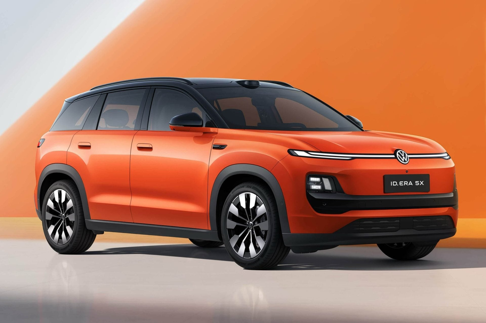

Ce SUV électrique de Volkswagen et Xpeng pourrait débarquer en Europe autour de 20 000 €

🔥 Top produits tech du moment
Publicité — Liens de partenariat Amazon : une commission peut être reversée, sans surcoût pour vous.
L'actualité tech ne cesse d'évoluer. Nouveaux produits, acquisitions, découvertes : chaque jour apporte son lot d'informations importantes pour comprendre le monde numérique de demain.
Ce qu'il faut retenir
Volkswagen élargit sa gamme chinoise avec l’ID.
Era 5X, un SUV électrique venant se glisser sous l’ID.
Développé étroitement avec Xpeng, ce modèle inédit coûtera environ 20 000 € et pourrait arriver en Europe pour renforcer le catalogue de la marque.
Pourquoi c'est important
Cette information pourrait avoir des répercussions sur tout le secteur technologique. Elle concerne directement les utilisateurs de technologies numériques et mérite d'être suivie de près dans les prochaines semaines. Ce SUV électrique de Volkswagen et Xpeng pourrait débarquer en Europe autour de 20 000 € est ainsi un signal à prendre en compte pour comprendre les évolutions du secteur.
En résumé
Retenez l'essentiel : Ce SUV électrique de Volkswagen et Xpeng pourrait débarquer en Europe autour de 20 000 €. Cette actualité a été rapportée par 01net. Nous continuerons de suivre ce sujet et de vous tenir informés des prochaines évolutions.
Source : 01net